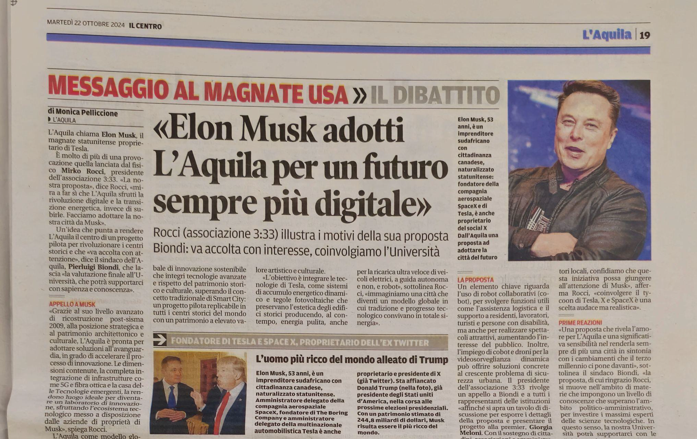
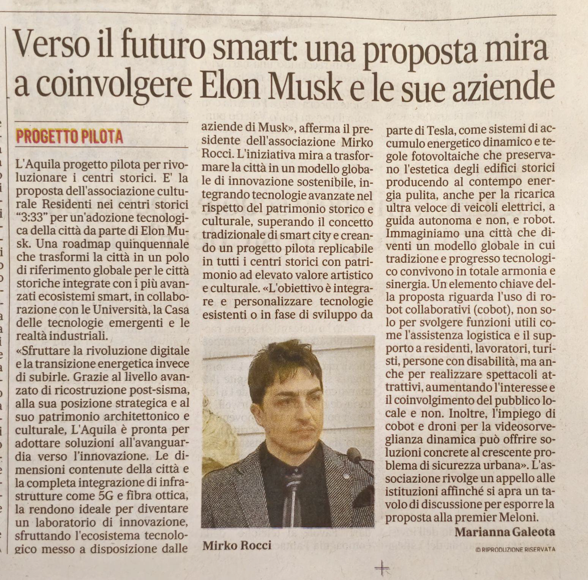

L’Associazione Culturale Residenti nei Centri Storici “3:33” presenta una proposta innovativa volta a rendere L’Aquila il centro di un progetto pilota per rivoluzionare i centri storici.
“Proponiamo l’adozione tecnologica della Città dell’Aquila da parte di Elon Musk”, afferma il Fisico Mirko Rocci, presidente dell’Associazione 3:33. “La nostra proposta mira a far sì che L’Aquila sfrutti la rivoluzione digitale e transizione energetica invece di subirle. Il momento è propizio”.
Grazie al suo livello avanzato di ricostruzione post-sisma 2009, alla sua posizione strategica e al suo patrimonio architettonico e culturale, L’Aquila è pronta per adottare soluzioni
all’avanguardia in grado di accelerare il processo di innovazione. Le dimensioni contenute della città e la completa integrazione di infrastrutture come 5G e fibra ottica, rendono il capoluogo d’Abruzzo ideale per diventare un laboratorio di innovazione, sfruttando l’ecosistema tecnologico messo a disposizione dalle aziende di proprietà del magnate sud africano Elon Musk.
L’iniziativa mira a trasformare la città in un modello globale di innovazione sostenibile, integrando tecnologie avanzate nel rispetto del patrimonio storico e culturale. La proposta supera il concetto tradizionale di Smart City, puntando a creare un progetto pilota replicabile in tutti i centri storici del mondo con patrimonio ad elevato valore artistico e culturale.
L’obiettivo è integrare e personalizzare tecnologie esistenti o in fase di sviluppo da parte di Tesla, come sistemi di accumulo energetico dinamico e tegole fotovoltaiche che preservano l’estetica degli edifici storici producendo al contempo energia pulita, anche per la ricarica ultra veloce di veicoli elettrici, a guida atuonoma e non, e robot. “Immaginiamo una L’Aquila che diventi un modello globale in cui tradizione e progresso tecnologico convivano in totale armonia e sinergia”, continua Rocci.
Un elemento chiave della proposta riguarda l’uso di robot collaborativi (cobot), non solo per svolgere funzioni utili come l’assistenza logistica e il supporto a residenti, lavoratori, turisti e persone con disabilità, ma anche per realizzare spettacoli attrattivi, aumentando l’interesse e il coinvolgimento del pubblico locale e non. Inoltre, l’impiego di cobot e droni per la videosorveglianza dinamica può offrire soluzioni concrete al crescente problema di sicurezza urbana, contribuendo a contrastare efficacemente fenomeni di violenza e microcriminalità che stanno influenzando la tranquillità del nostro capoluogo.
“La città sta soffrendo una grave carenza di residenti nel centro storico, una situazione inaccettabile per un capoluogo di regione di un Paese del G7”, sottolinea Rocci. “La
pedonalizzazione crescente, la scarsità di parcheggi e la mancanza di servizi essenziali per residenti e commercianti, insieme a una micrologistica complessa, richiedono soluzioni
dirompenti e visionarie. Crediamo che l’adozione di questi strumenti avanzati possa migliorare significativamente la qualità della vita urbana, stimolare il ripopolamento del capoluogo e promuovere nuovi stili di vita, rendendo L’Aquila un modello unico di città futuristica, con un livello di sostenibilità e qualità della vita senza eguali.”
L’Associazione 3:33 rivolge un appello alle autorità locali, in particolare al Sindaco Pierluigi Biondi, all’Assessore Comunale con delega all’Innovazione Tecnologica Ersilia Lancia, all’Assessore Regionale con delega alla Ricerca e Università Roberto Santangelo e alle altre figure istituzionali competenti, affinché si apra un tavolo di discussione per esporre i dettagli della proposta e sollecitare l’impegno a presentare il progetto alla premier Giorgia Meloni.
“Con il sostegno di cittadini, associazioni e amministratori locali, confidiamo che questa iniziativa possa giungere all’attenzione di Elon Musk, attraverso il nostro attuale primo
ministro”, afferma Rocci. “Coinvolgere il tycoon di Tesla, X e SpaceX è una scelta audace ma realistica; siamo certi che il momento sia irripetibile, i tempi maturi, e che questa proposta godrà dell’attenzione che merita, anche grazie agli ottimi rapporti in essere con la premier italiana. Musk stesso e le sue aziende ne beneficerebbero in termini di immagine, contribuendo a creare un laboratorio unico nel suo genere, nel cuore del Paese più bello del mondo. “La nostra visione è quella di una roadmap quinquennale che trasformi L’Aquila in un polo di
riferimento globale per le città storiche integrate con i più avanzati ecosistemi smart. La collaborazione con le università, la Casa delle Tecnologie Emergenti e le realtà industriali di rilievo già operanti sul territorio, potrebbe amplificare l’impatto positivo del progetto, contribuendo al progresso della città e rendendola un hub dell’innovazione per tutto il CentroSud Italia ed Europa. Questa proposta intende coadiuvare, potenziare e complementare quelle esistenti, non sostituirle.
In vista del 2026, anno in cui L’Aquila sarà Capitale Italiana della Cultura, qualora il progetto venisse realizzato, questa iniziativa permetterebbe di presentare un’anteprima ai cittadini e ai turisti. “Vogliamo offrire un’esperienza unica che unisca storia e tecnologia”, spiega Paolo Giammatteo, esperto di intelligenza artificiale e responsabile delle relazioni con la pubblica amministrazione dell’Associazione 3:33. “I cittadini e i visitatori potrebbero sperimentare, in fase dimostrativa, i primi vantaggi derivanti dall’adozione di cobot, droni e altri servizi innovativi già nel 2026.”
“È il momento di essere protagonisti del cambiamento, non più meri spettatori passivi”, conclude il presidente Rocci. “Con l’avvento dell’intelligenza artificiale siamo di fronte a una
rivoluzione epocale, persino superiore a quella di internet. Insieme, possiamo trasformare L’Aquila in un modello globale di innovazione e sostenibilità senza precedenti. E 3:33 vuole
essere portavoce di questa trasformazione.”

